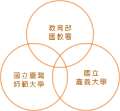
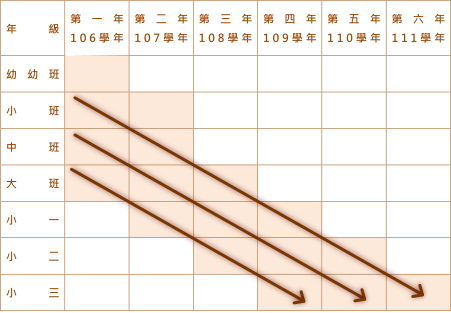

鑒於國內缺乏幼兒學習、幼兒教保課程成效及教育政策成效的短期及長期資料，教育部國教署特委託國立臺灣師範大學及國立嘉義大學以全國代表性大樣本規畫六年研究，自幼兒就讀幼兒園起追蹤其學習情形至國小三年級。
藉此長期追蹤兒童的發展與學習，了解相關因素，提供教育及政策參考。


計畫目的
了解國內幼兒在接受幼兒園教保服務後逐年的學習發展情形，以及釐清幼兒園及教保服務人員特性、課程與教學取向、教育政策、家庭特性等因素與幼兒學習的關係，作為政策決策的參考。
提供國內相關研究人員進行幼兒與家庭及幼兒教保方面的相關研究，以建立我國幼兒教育在國內及國際學術領域的地位。
計畫規劃
計畫自106學年度（民國106年10月）開始，收集2-6歲幼兒在幼兒園的資料，並逐年追蹤三組研究對象幼兒至國小三年級：
-
大班幼兒追蹤至109學年，收集大班、國小一、二、三年級學習表現及發展情形；
-
中班幼兒追蹤至110學年，收集中班、大班、國小一、二、三年級學習表現及發展情形；
-
小班幼兒追蹤至111學年，收集小班、中班、大班、國小一年級學習表現及發展情形。

取樣方式
以臺灣本島及離島地區立案公私立幼兒園的幼兒為母群體，根據教育部公佈的 105 學年度公私立幼兒就學人數，計算全國各區域（北中南東）各年齡層（幼小中大）就讀公私立幼兒園的人數，及其分別佔全國就學幼兒之比例，以此比例作為抽取各類型（區域、年齡、公私性質）幼兒樣本的依據，進行隨機抽樣。